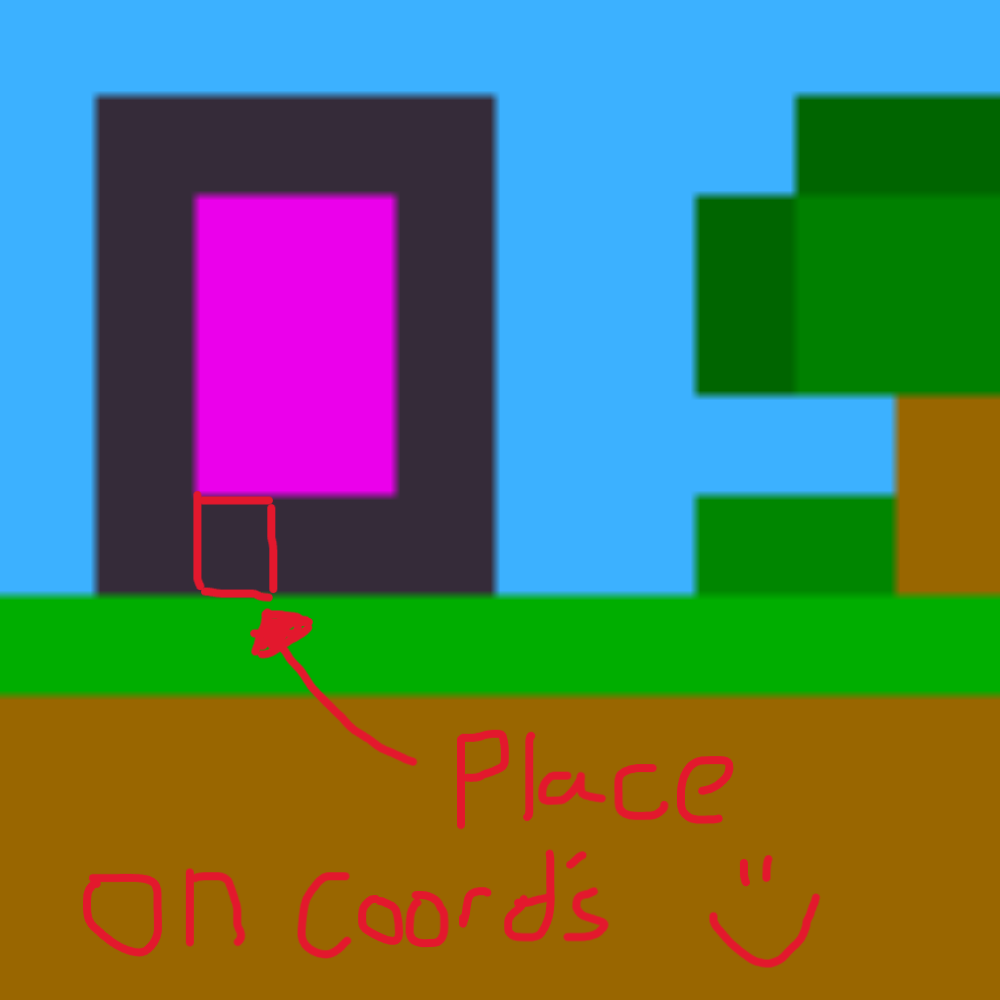

Nether Portal Calculator
The Minecraft nether is a space warping place. Where one block in the nether is equivalent to eight blocks in the overworld. This makes using the nether as a mode of fast transport an effective way to get around the overworld. However, in Minecraft Bedrock portals never seemed to work like their counterparts in the Java edition of the game. Bedrock almost always requires you to rectify the position of one portal to another as the game seems to not place them correctly. This leads to portals creating one way connections and other funky placement. This page has a simple method for finding where your portal should be.
Portal Position Calculator
Nether coordinates
Place your portal in the overworld at:
Enter coordinates and press 'Go'
How to use the Nether Portal Calculator.
Step 1: What are we trying to do?
In what dimension are our target coordinates in? nether or overworld? Press 'Swap Input Dimension' to get into the correct dimensional input mode.
Step 2: Find your coordinates ingame.
In Java this can be done using the F3 screen and finding the 'x, y, z' coordinates. In Bedrock this can be done by enabling coordinates in the world settings. The y coordinate is not relevant here so only note down the first and last numbers.
Step 3: Enter your coordinates.
Making sure the correct dimension is selected. Enter your coordinates and press 'go'
Step 4: Place your portal.
Using the diagram place and light your nether portal, ensuring one of the base blocks of the portal are on the coordinates. Happy dimension hopping.
